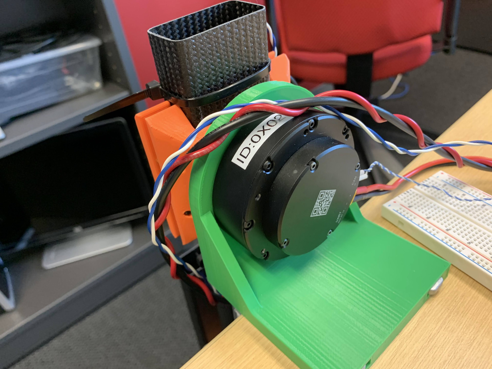
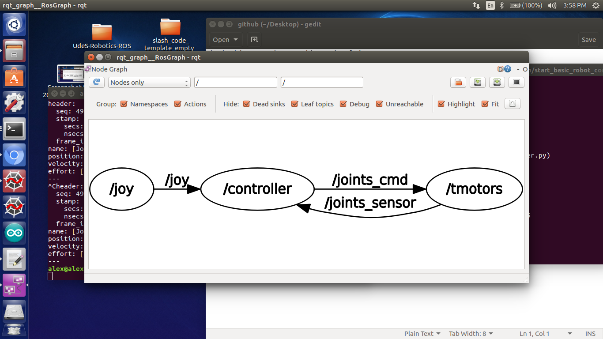

Abstract
We have developed a lightweight 2 DoF robotic arm interfaced with ROS for teaching robot arm control design. The source code that implement many popular control scheme (computed torque, joint-space impedance, task-space impedance, etc...) is available here:
Publications & Resources
Project Media
Prototype

Prototype

Prototype

ROS architecture